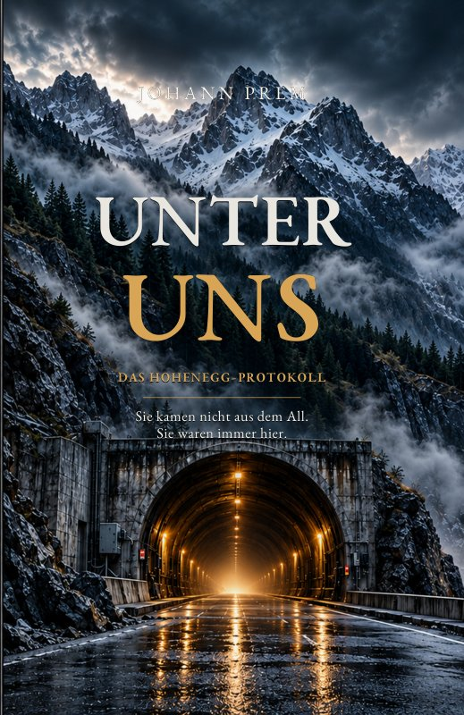

UNTER UNS
Das Hohenegg-Protokoll
Sie kamen nicht aus dem All. Sie waren immer hier.
Ein stillstehender Bohrer. Drei Schläge aus dem Berg. Und ein Geheimnis, das niemand öffnen sollte.
Prolog und Kapitel 1–3 kostenlos lesenDer Berg antwortet
Die Bohrmaschine steht still. Drei Schläge aus dem Fels. Dann vier. Im Hohenegg-Tunnel beginnt alles mit einer Störung, die niemand erklären kann. Doch als Messdaten verschwinden und gefälschte UFO-Videos auftauchen, ahnen die Verantwortlichen: Jemand versucht, die Wahrheit unter dem Berg zu verbergen.
Der Geologe Klaus Vonderstein erkennt ein Signal aus seiner Vergangenheit. Seismologin Nora Auer sucht Beweise statt Sensationen. Bauleiter Andreas Reiter muss entscheiden, wie er seine Mannschaft schützen kann.
Eine Akte aus dem Jahr 1987 führt sie zu einem zugemauerten Zugang. Dort wartet etwas, das älter sein könnte als jede menschliche Geschichte. Während ein mächtiges Konsortium den Berg öffnen will, wird aus der Entdeckung ein Wettlauf gegen die Zeit. Die größte Gefahr lauert vielleicht nicht hinter der Wand, sondern davor.
Zusammenfassung nach dem vom Autor bereitgestellten Originalumschlag.
Online lesen bei Rainsoft-Book
Die 138-seitige Buchausgabe ist als geschützter Textreader eingerichtet. Die fünf Bildseiten des Buch-PDF sind nicht Bestandteil der Online-Textausgabe. Der vollständige Buchtext ist nicht öffentlich freigegeben.